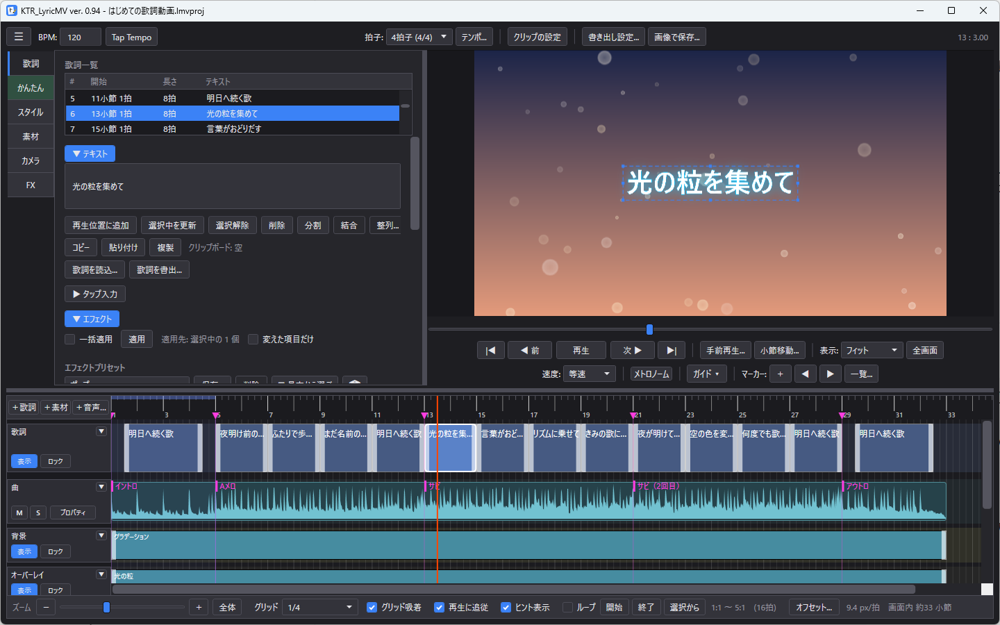
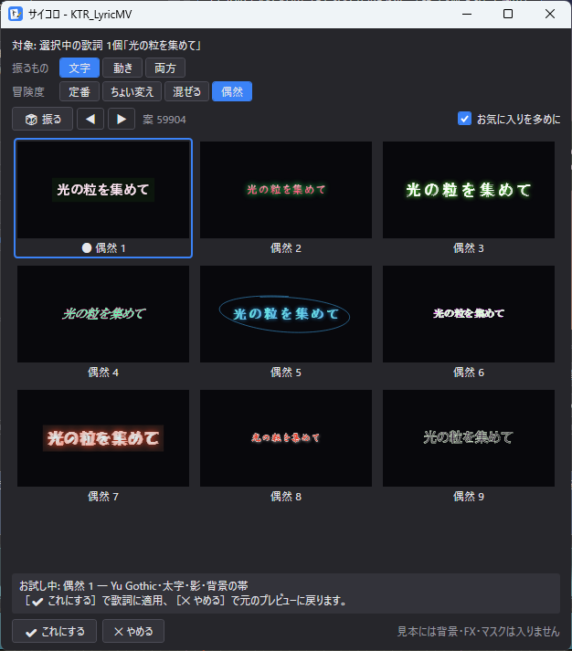
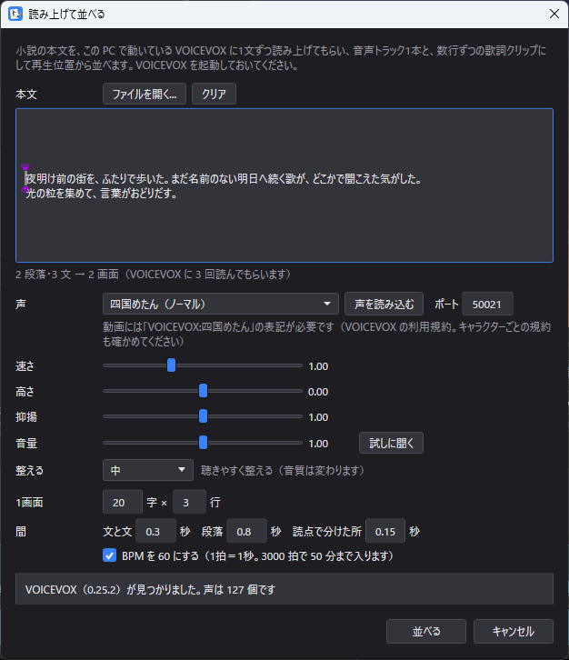
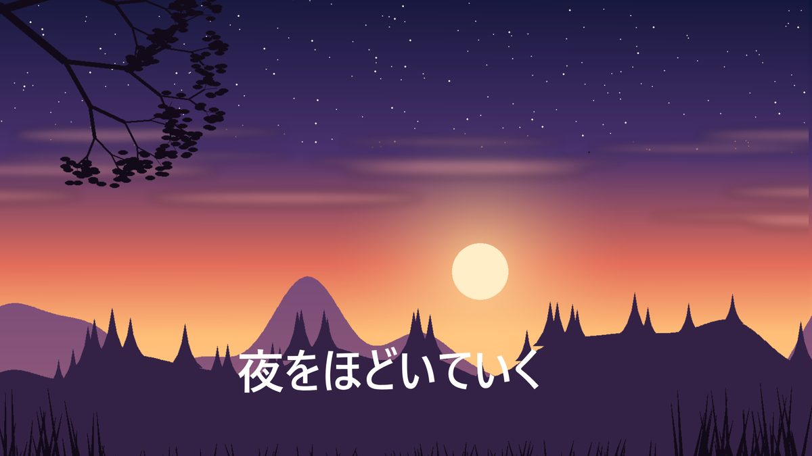

曲を読み込んで、拍に合わせて歌詞を並べ、文字の見た目と動きを選ぶだけ。歌詞動画を MP4 に書き出せる、Windows 用の無料ソフトです。
上のボタンからインストーラーを入れます。「PC が保護されました」と出たら「詳細情報」→「実行」。
☰ メニューの「サンプルを開く」→「はじめての歌詞動画」。Space で再生してみましょう。
「かんたん」タブの見本（タイル）を押すと、その歌詞の見た目や動きが変わります。
動画に書き出すときだけ、無料の変換ソフト ffmpeg が必要になります。
ffmpeg を採用した理由は、高画質であること、それに透過movの書き出しができることです。インストール方法は使い方ガイドにあります。
（まず KTR_LyricMV の使い心地を試してみて、気に入ったら ffmpeg を入れる手順で大丈夫です）。

位置と長さは秒ではなく「小節・拍」。曲を流しながら Enter を押すだけで、歌詞を 1 行ずつ置けます。プレビューの絵と音が、そのまま MP4 になります。

グラデーション・光沢・質感・筆のかすれなど 54 種の見た目と、登場・退場・ループの動きから選べます。決めきれないときはサイコロを振ると、選んだ歌詞そのもので 9 通りの案が並びます。押して試し、気に入ったら「これにする」。
文字PV を自動で組み立てる JIZURA（hakoniwa氏 作、MIT ライセンス）をアプリの中で動かせます。歌詞から、カット割り・レイアウト・演出・背景までを組み立てて描き、行ごとに部品を選び直すこともできます。インターネットにはつながず、PC の書体で描きます。

小説などの文章を、PC で動かした VOICEVOX に 1 文ずつ読み上げてもらい、声の音声トラックと、数行ずつの文字のクリップにして並べます。声の大きさも聴きやすく整えるので、朗読動画やオーディオブックがすぐ作れます。

写真や動画、雨や光の粒などアプリが描く素材、音に合わせて動くスペクトラム、360° 写真。奥行きのあるカメラの動きや、拍に合わせた閃光で、歌詞の後ろの景色も動かせます。
迷ったらインストーラー版です。zip 版は、好きなフォルダに展開して KTR_LyricMV.exe を起動します。中身は同じです。
デジタル署名をしていないために出る表示です。「詳細情報」→「実行」で起動できます。
各リリースに載せている SHA-256 と見比べます。コマンドプロンプトで certutil -hashfile ファイル名 SHA256。
もちろん、OKです。使用ソフト名としてKTR_LyricMVを記載する必要もありません（書いていただければ、それはそれで喜びます）。ただし、付属のサンプルの曲や絵を使うときのみ、KTR_LyricMVの表記をお願いします（使い方ガイドの「サンプルの利用条件」）。